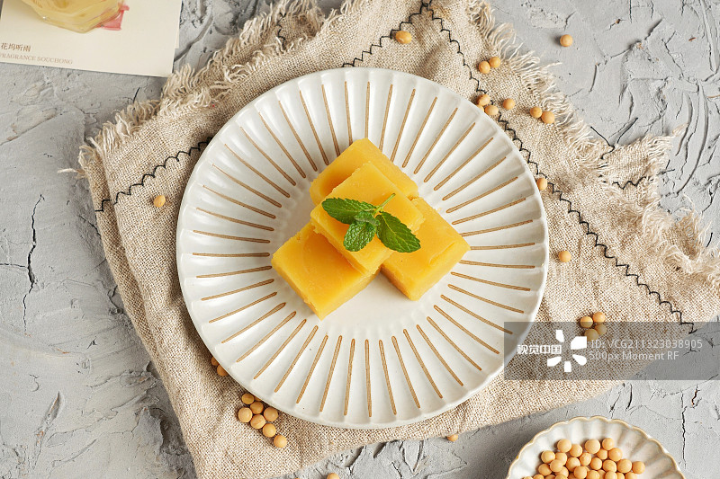

Pea yellow
Pea yellow, also known as pea huanger, is a traditional snack in Beijing and a seasonal product in Beijing's spring. Peas are usually grated, peeled, washed, boiled, sugar-fried, curdled and diced. After the finished product, the appearance is light yellow, delicate, melts in the mouth, sweet taste, cool taste.